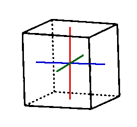
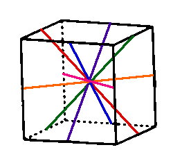
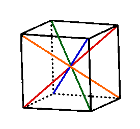

This post is going to be the first of (hopefully) many posts where I intend to share fun and interesting problems along with topics of research in applied mathematics topics I encounter. The prequisite knowledge of my posts will vary drastically; sometimes, the posts (such as today) will require no prequisite knowledge outside of high school math before calculus, and others will be topics and problems will be more advanced and specific in nature. Before each post, I'll list certain topics or classes that might be useful to understand every element of a post. However, I'll do my best to make ideas and concepts in a way that is easy to understand, and my writing style will be pretty informal and oftentimes, I'll switch from using "we" when there's a problem to solve and "I" when I'm talking about all the times I get confused and want to journal my experience solving a problem and researching a topic.
My ultimate goal is to engage an audience of people who don't have a background in mathematics or computer science that are still interested in engaging with mathematical ideas and problem solving. I believe there are so many interesting and fun ideas in mathematics that more people should know, if they are willing to hear them. And why not hear them from a guy who's struggling along with you in understanding them myself!
If you have any questions, or if you have any questions, my email is seinsidler@gmail.com or reach out to me on linkedin: https://www.linkedin.com/in/scott-einsidler/.
Prerequisites: Some high school math, but certainly no Calculus!
Today's problem comes from an excellent book by Arthur Engel called Problem-Solving Strategies. More specifically, it is the first problem from the fifth chapter, stated as follows:
Each of the faces of a cube is colored by a different color. How many of the colorings are distinct?
This problem is worth trying even if you have no idea how to get the exact answer. Pull out a pen and paper and give it a go before looking at the next two sections. Maybe pull out a rubiks cube or a tissue box to figure out a way to solve it!
A great aspect about Engel's Problem-Solving Strategies is that it has a ton of problems with detailed enough solutions to each problem, and all the problems are intended for a high school (albeit, mathematically inclined) students. I want to start with the book's solution before I show my own approach, just to get the solution out of the way before I go into my approach, which I'll go in depth on to explain a beautiful concept in mathematics: groups!
The book's solution is stated as follows:
Call the six colors 1, 2, 3, 4, 5, 6. Put the cube on the table so that face 1 is at the bottom. Consider face 2. If it is at the top then we can rotate the cube about a vertical axis so that face 3 is in front. Now the cube is fixed. There are $3! = 6$ ways to complete the coloring. Now, suppose that face 2 is a neighbor of 1. Then we rotate the cube so that 2 is in front. Now the cube is fixed, and the coloring can be complete in $4! = 24$ ways. Altogether, there are $6+24 = 30$ distinct colorings of the cue by six colors.
Remember that when you see $3!$, $4!$, or $n!$, that is called the factorial, which is defined as
$$n!=n\cdot (n-1)\cdot (n-2) \cdot ... \cdot 1$$
So for example $4!=4\cdot 3\cdot 2\cdot 1=24$ and $6!=6\cdot 5\cdot 4\cdot 3\cdot 2\cdot 1=720$.
I see some pros and some cons to this solution. A pro is that it just requires thinking about all the possible cases of colorings, and there isn't really a lot of mathematical machinery involved, outside of the factorial, which appears pretty naturally and intuitively in the solution. One con, in my opinion, is that this approach doesn't seem too intuitive. It would involve knowing that you would only need to know the color of two sides to know the cube is fixed. Personally, my mind didn't go there when I thought of my solution.
In problems like these, I think its always nice to start with a simple example that we know the answer to that can help us figure out how to solve our problem. What if we tried to solve the problem but for a two-sided coin with colors instead of a cube?
So, how many ways are there to color each side of a coin with two different colors? 1 way of course! But why exactly?
Well, if we didn't know any better, we might say that there are two different ways to order the colors, say red and blue:
$${Red, Blue},{Blue, Red}$$
So, lets say we take a quarter and paint the top red and the bottom blue, and put that to the side. Then, we take another quarter, and paint the top of this quarter blue and the bottom red. We painted the two possible ordering of colors on this quarter, but we notice that if we flip one of the quarters over, we'll just have two identical looking quarters. At this point, if we flip over one quarter and swap them around a bunch of times like a street magician, we won't be able to tell them apart!
This means that if we said there are two ways to color a coin, we would be overcounting the ways we can color the cube. But how do we account for this?
Well, we know that quarter can be oriented two different ways. The first way is if we do nothing to the quarter and the second way is if we flip the quarter over. When we counted the number of ways we can order the two colors, that doesn't take into account the quarter looks the same when we do nothing to it and when we flip it. So if we take the number of ways we can orient the quarter, we get our answer:
$$ \begin{equation}\frac{\textit{number of ways to order colors}}{\textit{number of ways to orient the coin}}=\frac{2}{2}=1\end{equation}$$
How can we apply this to our problem. First, a detour into an interesting concept of mathematics: groups!
It turns out that all the integers, real numbers, the complex numbers have something in common with the rotations of a coin or a cube. They all can be described as groups!
First, I'll give the definition of a group, taken from the book Combinatorics by David R. Mazur:
A group is a pair (G,*) where G is a set and * is a binary operation on G that satisfies the following four properties.
- Closure: For each $ a, b, c \in G $, we have $ a * b \in G $.
- Associativity: For each $ a,b,c \in G $, we have $ a * (b * c) = (a * b) * c $.
- Existence of an identity: There is an element $ e \in G $ such that for each $ a \in G $, we have $ a * e = a $ and $ e * a = a $.
- Existence of inverses: For each $ a \in G $, there exists $ x \in G $ such that $ a * x = e $ and $ x * a = e $.
Some examples of groups are the integers $(...,-2,-1,0,1,2,...)$ under addition, the complex numbers $a+ib$ without zero under multiplication, and, the composition of rotations of a circle.
I can already feel the confusion many of you have seeing this definition. What the heck does $\in$ mean? What the heck is a binary operation? Why should I care about this?
Lets start with what $\in$ means. Simply, you can replace the symbol $\in$ with the word "in." More concretely, when we say $a \in G$, we are saying a single element (or object) is part of a set. To be honest, it isn't important to get a specfic defintion of "element" or "set" for our purposes. A good example to understand this is using a deck of cards as our set and the ace of spades as an element. So, we could say $\textit{ace of spades} \in \textit{A deck of cards}$. Tying this to groups, the "$G$" is like our deck of cards, and $a, b, c$ are cards in the deck.
Second, lets talk about a binary operation. A binary operation is just a function that operates on two objects on a time, and outputs an object. We already know of some binary operations. For example, multiplication and addition of numbers are binary operations. Binary operations are just a name for all these kinds of operations. As we'll see, there are more binary operations than just multiplication and addition.
Lastly, you should care about groups because we can apply the concept of groups to our problem of coloring the cube!
Let's go back to the coin example. We can construct a kind of group, called a symmetric group, with the possible orientations of the coin where we can pick the coin up and put it down in the same place as the elements of the group, and the binary operation being composing one rotation of the coin after another. To be clear, composition here just means we do one rotation of the coin and then another.
The coin only has two elements: leaving the coin as is, lets call that $I$, and flipping the coin over, lets call that $F$. I won't prove that this is a group rigorusly, but its important to understand how this group abides by the properties of a group. We can see that its closed because any combination of leaving the coin as is or flipping the coin over will make the coin either in the $I$ orientaiton or $F$ orientation. We can also see that it is associative because if we choose any combination of $I$ and $F$ three times, we can perform any two of those rotations first before we perform the last rotation to get the same result (take out a quarter and give it a try if you don't believe me). The identity of this group would be $I$: this is apparent because if we do the $I$ rotation and then $F$, we are just left with $F$. Lastly, it is obvious that both $I$ and $F$ have inverses, which are just themselves. If we leave the coin as is and then leave the coin as is, we have a coin left as is (shocker). In addition, if we flip the coin over and then flip the coin over, we are left with the coin left as is if we didn't do anything at all (in other words, we are left with $I$).
From this, we can see that the rotations of a coin forms a group, or more specifically, a symmetric group. And as you could guess, the rotations of a cube also form a symmetric group! But how does this relate to the prolem?
If we remember when we solved the problem for the coin, we used the following expression to figure out all the ways to color the coin.
$$\frac{\textit{number of ways to order colors}}{\textit{number of ways to orient the coin}}$$
With our knowledge of groups, we can now recognize that the denominator of the fraction is just the size of the symmetry group of the coin! We can write a similar expression for our cube problem as follows:
$$\begin{equation}\frac{\textit{number of ways to order colors}}{\textit{number of ways to orient the cube}}\end{equation}$$
So, if we can count the number of rotations of the cube, we can solve our problem!
Lets count all the rotations of a cube. If you have a rubiks cube or a tissue box near by, I recommend holding this in your hand to perform these rotations.
First, like our coin example, we can just leave the cube as is. This is the identity element of the group. So far, that gives us 1 orientation.
Second, the next obvious set of rotations is if we flip the cube 90 degrees by each face. We can visualize this by putting the following axes inside the cube and using them to rotate around (this image along with the other similar images were found from here).

For each of these axes, of which there are three, we can rotate the cube 90 degrees, 180 degrees, and 270 degrees (360 degrees would be the same as the identity). There are three of these kinds of rotations for the three axes, giving us 9 more rotations.
The next two sets of rotations are less obvious, at least to me. We can think of the last rotation as rotations of the axes of opposite faces. What if we had axes that are from opposite edges? Visually, his would give us the following:

If your holding a cube in your hands right now, you can recreate this by holding the cube in one hand by diagonally opposing edges. We can do this in 6 possible ways, meaning there are 6 axes to rotate over. However, these rotations are not incremented by 90 degrees this time. If you are holding the cube along one of these axes, you would have to rotate the cube twice to get it back to where it started. This means that these rotations are 180 degree rotations. Because there are 6 axes and 2 rotations for each axes before we get back to the start, that gives us 6 total rotations (remember, rotating twice along one of these axes is the same as the identity rotation, which we already counted).
We have created rotations by each face and by each edge. You might have guessed that the last set of rotations could come from axes constructed from opposite corners. Visually, this would look like the following:

As you can see or have figured out by holding the cube, there are four of such axes. If you rotate along these axes by pinching opposing corners of a cube and rotating, you should notice it takes three rotations, or three 120 degree rotations, to get back to where you started. This means we have two rotations for each of the four axes, giving us 8 total rotations.
Finally, we can add all these up to get the total number of rotations of the cube, or the size of the symmetry group! This gives us $$1+9+6+8=24$$ total rotations.
Putting this all together, we can return to our expression for finding the number of distinct ways to color the cube with six colors, which is the following:
$$\frac{\textit{number of ways to order colors}}{\textit{number of ways to orient the cube}}$$
We found the denominator to be 24. We can find the numerator in the following way: we have 6 choices for the first color, and for each choice of the first color, we have 5 choices for the second color. For the 5 choices of the second color, we have 4 choices for the third color. We keep this going all the way down to having 1 choice for the last color given 2 choices for the second to last color. This means that there are
$$6\cdot 5\cdot 4\cdot 3\cdot 2\cdot 1=6!=720$$
ways to order the 6 colors.
Now, we have all we need to plug in to our expression for the distinct colorings of the cube and solve the problem. This gives us
$$\frac{\textit{number of ways to order colors}}{\textit{number of ways to orient the cube}}=\frac{6!}{24}=\frac{720}{24}=30$$
which is the answer that was found in the first solution!
We took a seemingly simple problem and were able to explore a rather important mathematical idea, groups, through solving this problem. Groups connect ideas of algebra with ideas of geometry, such as rotations of cubes and coins. I hope exploring this idea can elucidate the idea that mathematical objects are more expansive and abstract than numbers and symbols. We can apply concepts of algebra to geometric objects and use them to solve counting problems. That's pretty cool to me!
Groups and symmetry groups are a huge topic in both modern mathematics and in physics. If you enjoyed this and want to learn more about groups in a rather uncomfrontational and informal manner, I highly recommend the book Love & Math: The Heart of Hidden Reality by Edward Frenkel. Along with giving a unique autobigrpahical perspective of being a mathematician in the late Soviet era, Frenkel does a great job explaining groups and expanding the idea of groups outside of what has been discussed here. We only talked about groups with a finite number of elements, but it turns out there are groups with an infinite number of elements!
I hope to keep writing more posts attacking fun problems along with more data science and applied mathematical projects that I find interesting, along with some opinion pieces where I see fit. I hope you enjoyed this little journey solving this problem, and hope to join me in my mathematical adventures in the future!